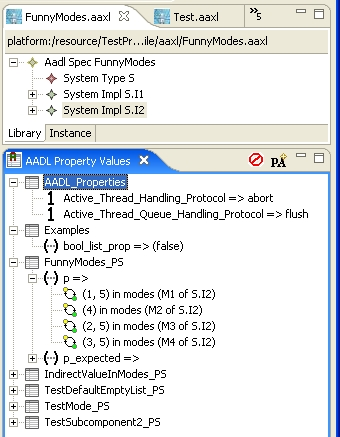
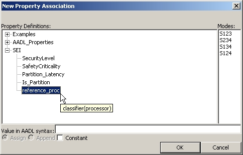

Previous
Next
Previous
Next 
| 7.7 The “AADL Property Values” View |
The “AADL Property Values” view both displays the property associations that apply to the
currently selected AADL model object, and allows the property associations to be modified.
Generally, the view displays the property associations that apply to the selected model object.
The view features a context menu that can be used to create new associations or edit existing
ones.
| 7.7.1 Viewing Property Associations |
The view displays all property associations for the currently selected model object organized by
property set. The list is pre-filtered to only show those properties that apply to select object,
e.g., if the selected object is a system implementation, properties that apply only to connections
are not shown. Additionally, by default those properties that are undefined for the current
object are hidden; they can be displayed by toggling the “Show undefined properties” button
() on the view’s toolbar.

Figure 24: Examining the property associations for the system implementation "S.I2".
Figure 24 shows the contents of the “AADL Property Values” view when the system
implementation “S.I2” is selected. Property sets, marked with a , are the root node of the
display. Properties are the children of property sets, and are marked with either a  or a
to indicate that the value is a list or a scalar, respectively. Property associations whose value
have an additional level in the tree: the values are listed marked by a
or a
to indicate that the value is a list or a scalar, respectively. Property associations whose value
have an additional level in the tree: the values are listed marked by a  and the modes in which
they apply; see the values for FunnyModes_PS::p in Figure 24.
and the modes in which
they apply; see the values for FunnyModes_PS::p in Figure 24.
Hovering the mouse pointer over a property association in the view reveals a tool tip that
describes where the property association is defined:
- “Property exists locally.” The property association is declared in the currently selected object.
- “Property taking default value.” The value declared as the property’s default value is being used because there are no explicit property associations for the property that apply to the selected model object.
- “Inherits from name in file.” The property association is declared in the named object
in the given model file. In this case, the context menu on the property association
contains the command “Open Super Implementation” that causes the editor to (1) open
the file, (2) select the named object, and (3) select the declaring property association in
the “AADL Property Values”
value.

| 7.7.2 Adding a New Property Association |
To add a new property association for the currently selected model object, click on the “New
Property Association” button () on the view’s toolbar. This brings up a dialog box, shown in
Figure 25, that lets you configure the new property association. The dialog box allows you to
create a new property association graphically. All the functionality of a textual declaration of a
property association is present in this dialog.

Figure 25: The "New Property Association" dialog box.
The dialog provides a list of property definitions that are applicable to the selected AADL
Object. The definitions are organized in a tree by property set. Each definition displays its
property type as its tool tip. If the chosen definition is a list type, you have the option to assign
(=>) or append (+=>). The access attribute of the new property association is automatically
set based on the selected AADL Object.
The existence and nature of the modes list in the dialog box is dependant on the selected
AADL Object. The list is displayed only if the object contains modes
- If the selected object is part of a declarative model, the listed modes are the modes declared in that object and in its ancestors, if the object is a component implementation.
- If the selected object is part of an instance model, the list modes are the system operation modes of the instance model.
The property value is entered in the “Value in AADL syntax” field. The value must be correct
textual aadl. When you click “OK,” your selections are checked and you will be notified if
there are any errors in the provided value. The new property association is created only if the
selections are correct and the provided value is syntactically correct.
For example, if you wanted to create a new property association equivalent to
Examples::string_prop => "Test String Value" in modes (S123, S134);
you would want to set up the dialog like this:

You can also create a new property association by selected “New Property Association” in the
view’s context menu. Different fields might be pre-selected depending on what is selected in
the view. If a property set is selected, then in the dialog the property set is expanded and
selected. If an undefined property for a specific mode is selected, then the definition and mode
are pre-selected. If any other type of property is selected in the view, then the definition of that
property is pre-selected.
| 7.7.3 Modifying Existing Property Associations |
Existing property associations can be modified or overridden using options in the context menu.
An existing “locally declared” property association can be modified by using the “Modify
Property Association” command in the context menu. The “New Property Association” dialog
box is opened with all the options pre-selected based on the existing property association. You
can make any changes you want and click OK to modify the association. As with creating a
new association, if there are any errors with your new selections or values, the modification will
not proceed.
Similarly, when the property is currently receiving the default value, the context menu contains a
“Set Value” command that opens the “New Property Association” dialog box with as many
fields pre-selected as possible. This command creates a new local property association for the
selected property.
When the property value is being inherited from a property association in another model object,
the command “Override Inherited Property” appears in the context menu instead. Again, the
“New Property Association” dialog box opens and its values are pre-set based on the property
association that provides the value. Successful execution of this command creates a new local
property association in the current model object. If you want to modify the original property
association, first use “Open Super Implementation” and then invoke “Modify Property
Association.”
| Modifying Modal Property Associations |
The “AADL Property Values” view displays property associations by individual mode even
though a particular property association may apply for several modes. This means that when a
modal property value (that is, one marked with a ) is selected for modification, the
modification can affect the values of the property in other modes. In particular, when a modal
value is modified, the “Modes” segment of the “New Property Association” dialog box pre-
selects those modes that are named in the “in modes” clause of the property association being
modified. Thus changes to the property value will affect the value for all selected modes.
Furthermore, altering the set of selected modes changes the modes in the “in modes” clause of
the property association. If this set of modes overlaps with modes named in other local
property associations for the same property, the modes are removed from the other property
associations.
| 7.7.4 Removing Property Associations |
When the property association is local, the context menu contains the command “Delete
Property Association.” As expected, this command removes the property association from the
model object. Because a property association with an “in modes” clause can name more than
mode, applying this command to a modal property association can have unexpected result: the
command removes the entire property association that provides the value, and thus also
removes the property association for all the modes named in that property association’s “in
mode” clause. If you just want to delete the association for the single mode, use the “Remove
Mode from Property Association” command in the context menu.
To quickly remove all property definitions for all modes of a property value, use the “Remove
all Property Associations” command that is available when the property name itself is the target
of the context menu.